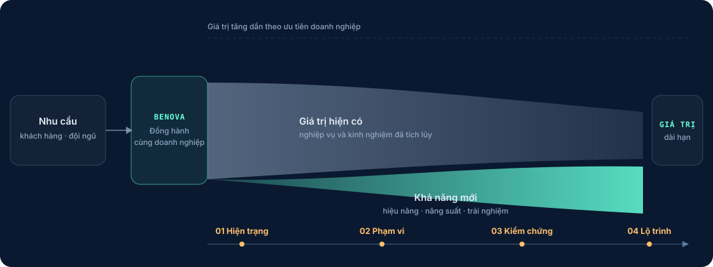

Giá trị đã tích lũy
Quy tắc nghiệp vụ, dữ liệu và kinh nghiệm vận hành cần tiếp tục phục vụ doanh nghiệp trong quá trình đổi mới.
NOVA đang hoàn thiện để phát hành sớm. Trao đổi cùng Binean để xác định phạm vi đánh giá phù hợp.
Trao đổi phạm viNOVA · Hiện đại hóa hệ thống nghiệp vụ
NOVA hướng đến mở rộng dịch vụ và chuyển đổi từng nghiệp vụ, với cổng kết nối tùy biến để các ứng dụng hiện có giữ cách tích hợp quen thuộc.
Bắt đầu với phạm vi cụ thể. Kiểm chứng kết quả nghiệp vụ, hiệu năng và vận hành trước khi mở rộng.
Kế thừa tri thức nghiệp vụ và đầu tư đã tích lũy.
Tùy biến cổng tiếp nhận theo ứng dụng đang sử dụng.
Chọn phạm vi và quyết định bằng kết quả kiểm chứng.
Nhu cầu của doanh nghiệp
Đổi mới backend liên quan đến cả ứng dụng, dữ liệu và cách đội ngũ vận hành. Điểm bắt đầu là xác định phần cần thay đổi và những kết nối cần bảo toàn.
Quy tắc nghiệp vụ, dữ liệu và kinh nghiệm vận hành cần tiếp tục phục vụ doanh nghiệp trong quá trình đổi mới.
Một thay đổi ở backend có thể kéo theo chỉnh sửa frontend và nhiều hệ thống tích hợp. Phạm vi ảnh hưởng cần được làm rõ.
Thời gian xử lý, khả năng đáp ứng tải và công sức vận hành cần được đo trên những nghiệp vụ đang tạo giá trị.
Mỗi thay đổi cần phạm vi, người phụ trách và tiêu chí nghiệm thu để đội ngũ chủ động triển khai và đánh giá.
NOVA được phát triển cho hướng tiếp cận này: bảo toàn giá trị cần giữ, mở rộng khả năng mới và kiểm chứng từng bước.
Giá trị hướng tới
Giá trị của NOVA được đánh giá qua khả năng giữ kết nối, khai thác nghiệp vụ và cải thiện cách hệ thống phục vụ doanh nghiệp.
Đáp ứng: Giá trị đã tích lũy
Bắt đầu bằng việc khai thác backend hiện có và lựa chọn từng phần cần hiện đại hóa theo ưu tiên kinh doanh.
Đáp ứng: Ứng dụng đang kết nối
Orbit tùy biến cổng tiếp nhận theo client hiện có. Phạm vi có thể giữ nguyên được xác nhận bằng kiểm thử tương thích.
Đáp ứng: Hiệu năng cần cải thiện
Đánh giá thời gian xử lý, khả năng đáp ứng tải và tài nguyên trên cùng workload để xác định mức cải thiện thực tế.
Đáp ứng: Chuyển đổi cần kiểm soát
Chia lộ trình thành các phạm vi có thể kiểm chứng, với kết quả nghiệm thu và điều kiện vận hành rõ ràng.
Lợi ích được đánh giá theo từng phạm vi. Chi phí, bảo mật, giấy phép và yêu cầu vận hành được thống nhất trước khi triển khai.
Nền tảng NOVA
Orbit thích ứng với cách ứng dụng kết nối. Aster kết nối backend tương thích. Vista mang đến giao diện làm việc. Nexus, bộ công cụ build và vận hành, tham gia ở giai đoạn sau.
Kết nối ứng dụng · điều phối nghiệp vụ
Nhiều cổng tiếp nhận có thể tùy biến theo cách gọi và dữ liệu của ứng dụng hiện có, dùng chung lớp điều phối nghiệp vụ. Hướng đến giữ cách tích hợp để hạn chế chỉnh sửa các hệ thống liên quan.
Không gian làm việc cho người dùng
Menu, tab, biểu mẫu và bảng trong một trải nghiệm tập trung. Khung ứng dụng đã dùng được; phần đăng nhập và kết nối Orbit đang được tích hợp.
Kết nối backend nghiệp vụ
Kết nối Orbit với backend tương thích, ánh xạ dữ liệu và quản lý phiên xử lý theo hồ sơ kết nối. Mỗi backend và phạm vi nghiệp vụ cần được kiểm chứng tích hợp.
Công cụ build và vận hành
Chuẩn bị bản build, môi trường và dữ liệu kiểm thử cho thay đổi trên backend. Các công cụ nền đã được dùng trong môi trường thực; trải nghiệm tích hợp vào NOVA thuộc giai đoạn sau.
Điều phối đa tác nhân
Điều phối bổ sung cho flow cần nhiều tác nhân hoặc kiểm soát từng bước. Echelon là thành phần ngang hàng và tham gia khi flow cần.
Hỗ trợ AI cho công việc
Hướng hỗ trợ đọc tài liệu, tóm tắt và chuẩn bị nội dung để con người dành thời gian cho đánh giá và quyết định. Chưa phải tính năng đã phát hành.
Cách bắt đầu
Thống nhất điều cần chứng minh, cách đo và điều kiện thực hiện. Kết quả đánh giá là cơ sở để lựa chọn phạm vi đầu tư tiếp theo.
Chọn nghiệp vụ, backend và những ứng dụng đang kết nối; xác định vấn đề ưu tiên.
Thống nhất mức tương thích cần giữ, dữ liệu kiểm thử, cách đo và tiêu chí nghiệm thu.
Đối chiếu kết quả nghiệp vụ, hiệu năng và công sức vận hành với hiện trạng trên cùng phạm vi.
Xác định phần có thể triển khai hoặc cần kiểm chứng thêm, cùng điều kiện và mức đầu tư dự kiến.

Chia sẻ backend đang sử dụng, các ứng dụng cần giữ kết nối và mục tiêu cần đạt. Binean sẽ cùng bạn xây dựng phạm vi đánh giá phù hợp.
Ba nội dung cần làm rõ khi xác định phạm vi
Backend, ứng dụng và những kết nối cần giữ.
Kết quả nghiệp vụ, hiệu năng và vận hành.
Điều kiện triển khai và phạm vi đầu tư dự kiến.
Trao đổi ban đầu qua email. Phạm vi, mức sẵn sàng và điều kiện đánh giá sẽ được xác nhận trước khi thực hiện.